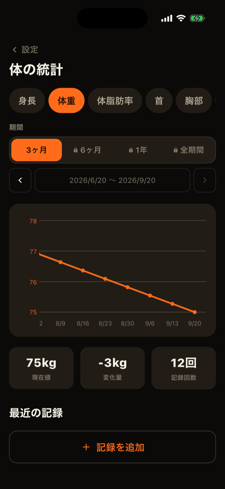
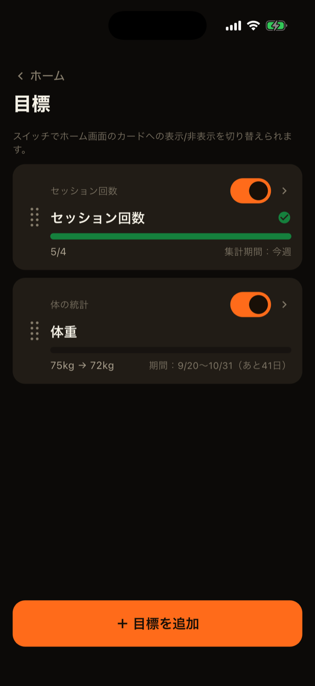
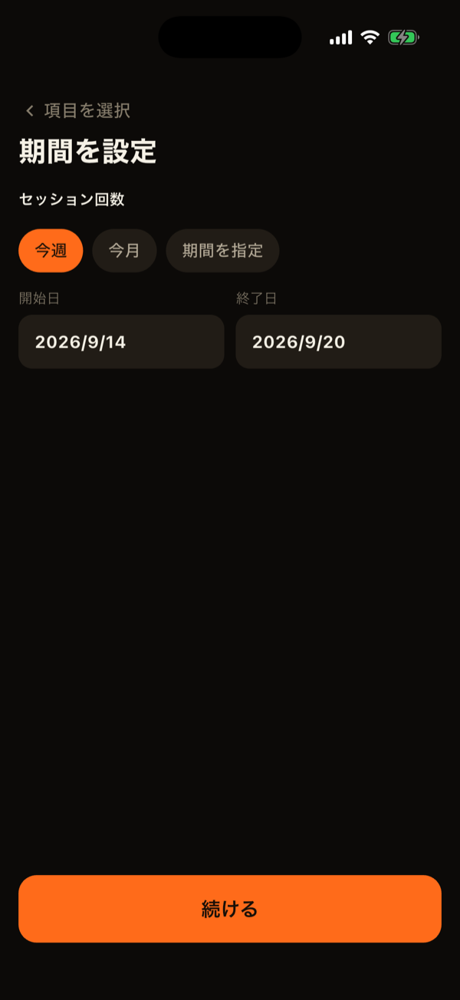
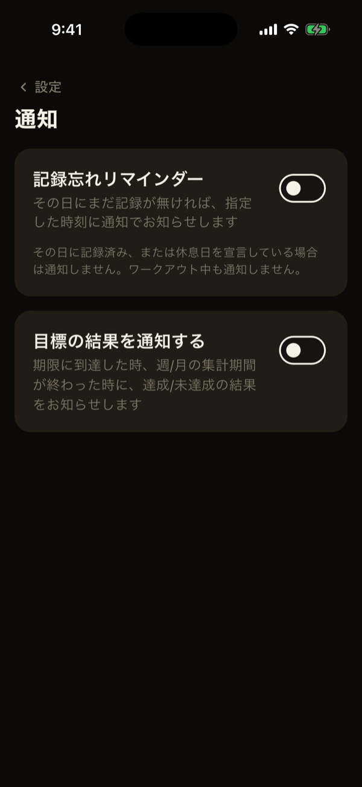
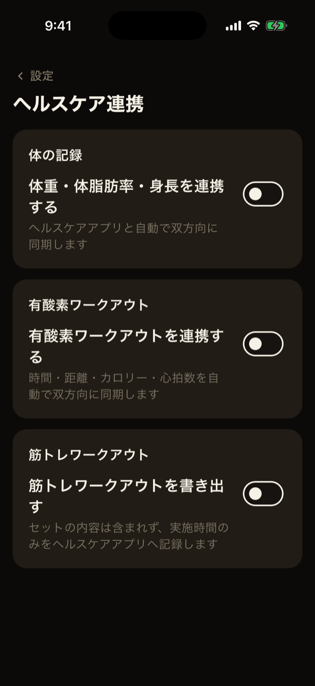

トレーニングの記録とは別に、体そのものの変化・目標・他アプリとの連携を扱う機能をまとめて説明します。
体の記録
設定の「体の記録」から開きます。体重・体脂肪率・身長のほか、首・胸部・ウエスト・臀部・上腕・前腕・太もも・ふくらはぎ（左右のある部位は左右別）の、計15項目を記録できます。体重と体脂肪率以外は、すべて任意です。
- チップで項目を切り替えて、グラフ・現在値・変化量・最近の記録を見られます。変化量は、良し悪しを色分けしません。
- 「最近の記録」の行をタップすると、その日の記録を修正・削除できます。
- グラフの期間は、3ヶ月までが無料です。

目標
ホーム右上のアイコンから、目標の一覧を開けます。「＋」から、次の5つのカテゴリで目標を作れます。
- 体の統計：体重など、15項目の目標値。
- セット数：部位別または種目別の、期間内のセット数。
- ボリューム：種目別の、期間内のボリューム。
- セッション回数：期間内にトレーニングした回数。
- 記録：実測1RM・推定1RM・重量×回数の目標。
セット数・ボリューム・セッション回数は、「今週」「今月」「期間を指定」から集計期間を選びます。今週・今月は、期間が終わると自動で次の期間に続きます。体の統計と記録は、開始日と期限を決めます。期限は延長できません。目標値が現在値より高いか低いかで、増やす目標か減らす目標かが自動で決まります。
- ホームの目標カードと、目標の一覧・詳細で、進捗を確認できます。目標を達成すると、進捗バーが緑になり、チェックが付きます。
- 一覧では、ドラッグで並び替えられ、各目標をホームのカードに出すかも選べます。
- 期限や期間が過ぎた目標は、達成・未達成が確定して「終了した目標」になります。「同じ内容でもう一度設定する」で、作り直せます。


ホーム画面ウィジェット（iOS）
目標の進捗は、iPhoneのホーム画面ウィジェット（小・中・大）でも確認できます。ウィジェットの編集画面で、表示する目標を選べます。アプリを開いたり離れたりしたタイミングで内容が更新されます。
通知
設定の「通知設定」で、2種類の通知を、それぞれオンにできます（どちらも初期設定はオフです）。
- 記録忘れリマインダー：好きな時刻に、その日まだ記録も休息日の宣言もなければ通知します。使い始めて7日間は通知しません。
- 目標の結果：期限や集計期間が終わった目標の結果を通知します。
通知は端末の中だけで作られます。日をまたいで一度もアプリを開かないと、通知が届かないことがあります。

ヘルスケア連携
設定の「ヘルスケア連携」で、Apple ヘルスケア（Androidはヘルスコネクト）と連携できます。連携するデータは、両方のOSに共通するものに限っています。
- 体の記録：体重・体脂肪率・身長を、双方向に同期します。他のアプリや機器で記録された値が、LiFTYに取り込まれます。LiFTYで記録した値も、ヘルスケアに書き出されます。
- 有酸素：ヘルスケアのランニング・ウォーキングなどのワークアウトを、あらかじめ選んだ種目の記録として取り込みます。有酸素のセッションを完了した時は、ヘルスケアへ書き出します。
- 筋トレ：セッション完了時に、ヘルスケアへ書き出すだけです（ヘルスケア側からは取り込みません）。
最初の同期では、過去の履歴も取り込みます。以後は、アプリを開いたタイミングで新しい分だけ同期します。連携をオンにするたびに、OSの許可が求められます。

LiFTYは、アカウント作成なしですぐに記録を始められる筋トレ記録アプリです。
App Storeでダウンロード